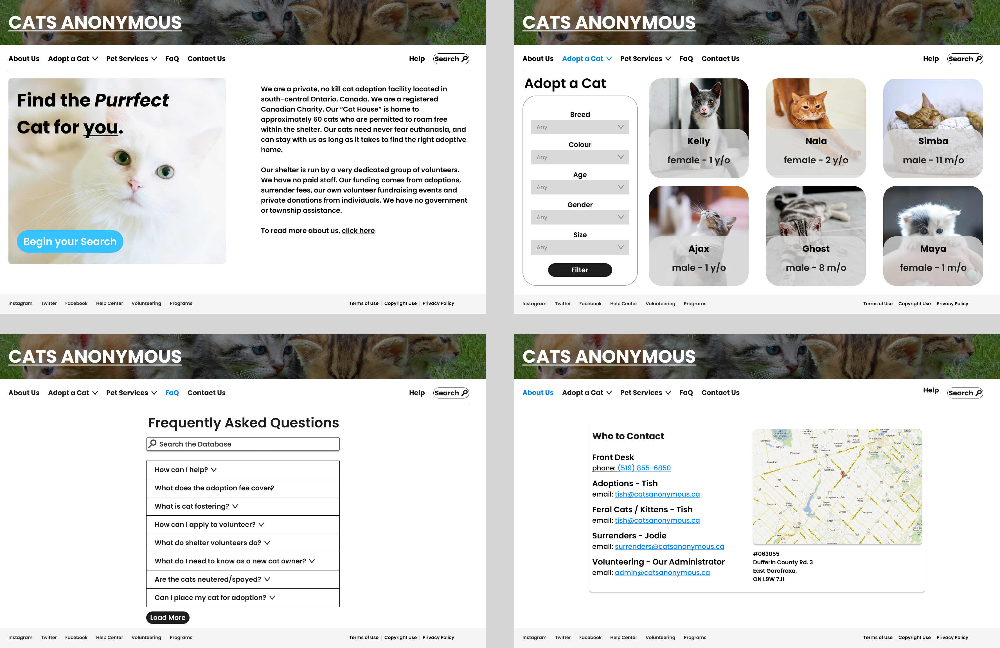

👋 Hi, I'm Ryan Shirazi
Projects
Throughout university, I have been tasked into making several projects. here are some of my most proud ones.
Group Project: Bird Fly

Bird Fly was a group project for CS105. I was partnered with Caleb Hahm, and we were tasked with recreating a game. The game we chose to recreate was Flappy Bird, as our "Bird Fly". The game was heavily inspired by the original game, but we also chose to make some creative differences such as a dynamic background.
Website Mockup: Cat's Anonymous
This project was submitted to this class, GBDA 228. The project was to recreate a website, and I chose to recreate a local cat adoption facility. It was my first time using Figma and I was learning as I was creating. I was really happy with how the project came out and I felt that I was starting to do what I wanted.
Hobbies & Interests
To better introduce myself, I thought best to describe some of my hobbies and interests.
Classical Music
I have a love for all music, but one of my favourite genres of music is classical and orchestral music. I listen to it more often than the other genres because it creates an atmosphere without causing a distraction. The playlist below is one I've been curating since 2018.